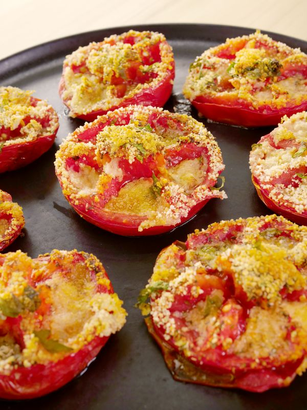

Provencal Tomatoes

Description
This mouth-watering recipe is ready in just 40 minutes and the ingredients detailed below can serve up to 6 people.
Ingredients
- 6 ripe tomates
- 95g fresh white breadcrumbs
Steps
- Preheat the oven to 200C.
- In a bowl, combine everything.
- Sprinkle the tomatoes with salt and pepper.